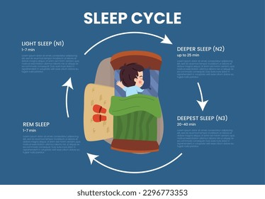
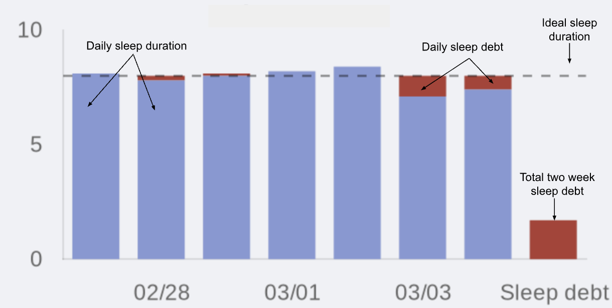

Latest Articles

Sleep Deprivation Health Costs 2026
I tracked my sleep for 30 days. Not just hours. Quality. Deep sleep percentage. REM cycles. Wake events. My watch gave me a "sleep score" every mornin...
Boulder Heat Wave Sleep Tracker Lies
Why My Sleep Tracker Lied to Me Every Night of the Boulder Heat Wave Dr. Sarah Mitchell At 3:14 AM last Wednesday, I was staring at the ceiling of my ...

Woke Up 447 Am 30 Days Sleep Score Down
The alarm went off at 4:47 AM because 5:00 felt too round, too obvious, too much like giving up. I had read the books. I had watched the YouTube video...
Why My 7 Year Old Outsmarted My Sleep Routine
Why My 7-Year-Old Outsmarted My Sleep Routine (And What I Did About It) It was 9:47 PM on a Tuesday in Boulder, and Leo was still awake. Not just awak...
I Tracked My Sleep For 847 Mornings Then I Ruined It With
I Tracked My Sleep for 847 Mornings. Then I Ruined It With One Bad Decision. I am an idiot. I need to say that first, because what I'm about to tell y...
The Night I Realized My Alarm Was Ruining My Life | Bedtime Cycle
I had been waking up to a blaring alarm for fifteen years. Then I learned what happens when you interrupt deep sleep.

How to Calculate Your Sleep Cycle Without a Smartwatch | Bedtime Cycle
No wearable? No problem. A pen, paper, and 7 days of patience is all you need to find your natural cycle length.

REM vs. Deep Sleep: Why the Cycle Order Matters | Bedtime Cycle
Deep sleep comes first. REM comes later. Interrupt the order and you wake up feeling like a zombie.

The Perfect Nap: How Long, When, and Why | Bedtime Cycle
20 minutes or 90 minutes. Nothing in between. Here is the exact science of napping without grogginess.
I Tried 4 Sleep Tracking Apps for 30 Days. Here's the Honest Data. | Bedtime Cycle
One app said I got 8.2 hours. Another said 6.4. I wore a polysomnography headband to find the truth.

How to Adjust Your Sleep Before a Time Zone Change (Jet Lag Tool) | Bedtime Cycle
Start adjusting three days before your flight. Here is the exact light exposure schedule for east vs west travel.

The 20-Minute Nap Rule: Why Less Is More | Bedtime Cycle
I napped for 90 minutes every day for a month. Then I tried 20 minutes. The data was shocking.

Circadian Rhythm vs. Sleep Homeostasis: The Two Forces Fighting Inside You | Bedtime Cycle
Your body wants to sleep because it is tired. Your brain wants to sleep because it is dark. They do not always agree.
Your Sleep Debt Score: A 7-Day Tracker Challenge | Bedtime Cycle
Most people are sleep-bankrupt. Track your debt for 7 days and see exactly how much sleep you owe.

The Sleep Quality Score: What Your Number Actually Means | Bedtime Cycle
Your fitness watch gave you a sleep score of 82. Do you know what that actually means? Probably not.

How I Tracked 847 Mornings and Found My Perfect Bedtime | Bedtime Cycle
Eight hundred and forty-seven mornings. That is not a typo. I literally tracked every single wake-up for over two years.

How to Shift Your Bedtime by 2 Hours Without Feeling Like Death | Bedtime Cycle
Stop trying to go to bed earlier. You are doing it backwards. The 15-minute rule is the only thing that works.

Mattress Firmness and Sleep Quality: What the Research Actually Says | Bedtime Cycle
Did you spend three thousand dollars on a mattress because a salesperson told you it would change your life?
Mark's Story: From 6 Alarms to 1 Natural Wake-Up | Bedtime Cycle
I set six alarms. Every single morning. That is what Mark told me in his first session.

Find Your Natural Bedtime: A 7-Day Experiment | Bedtime Cycle
I am just not a morning person. That is what I said for thirty years. Then I did this experiment.

Why Power Naps Make You Groggy (And How to Fix It) | Bedtime Cycle
I used to set a thirty-minute nap alarm. I always woke up worse. Here is why, and how to fix it.

Sleep Debt Forgiveness: A Realistic Plan (Not "Just Sleep More") | Bedtime Cycle
I will catch up on sleep when I am dead. That is what my brother texts me. Here is a realistic plan instead.

Why 8 Hours Is a Lie: The Case for Cycle-Based Sleep | Bedtime Cycle
Who decided eight hours was the magic number? Let me guess — someone who never had kids.
A Night Nurse's Guide to Sleeping During the Day | Bedtime Cycle
Shift workers have a forty percent higher risk of sleep disorders. I talked to one who figured it out.
How to Beat Jet Lag Without Prescription Drugs | Bedtime Cycle
Landing at London Heathrow at 9 AM. Your body thinks it is 2 AM. Here is what you do before you even get off the plane.

What Having a Kid Did to My Sleep Cycles (And How I Fixed It) | Bedtime Cycle
I have a PhD in sleep. And I still spent the first six months of Leo's life waking up to a vibrating phone under my pillow.

Reading Your Sleep Debt: When to Catch Up and When to Let It Go | Bedtime Cycle
I will sleep when I am dead. A text from my brother, 11 PM, last Tuesday. I did not respond. I was too tired to argue.